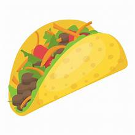

Welcome to The Little Taco Shop

Tacos and A Drink
About LTS
LTS was found in 2022 .Our shop was built from a Love of Tacos We hope our shop adds a unique and interesting place to our litte town.
Traco Trivia
When did Tacos First Appear In United States
Jeffrey M. Pilcher, taco historian and professor of history at the University of Minnesota, says the ealier mention of tacos in the United States are in a newspaper from 1905. Source:( Smithsonian Magazine)
Our Menu
| OUR TACOS | ||
| Tacos | Qty | Price |
|---|---|---|
| Crunchy | 1 | $1.5 |
| 2 | $3.0 | 3 | $4.5 |
| Soft | 1 | $2.0 |
| 2 | $4.0 | 3 | $6.00 |
| Salsa and chips for $25 | ||
Copyright © The Little Taco Shop
Back To Top